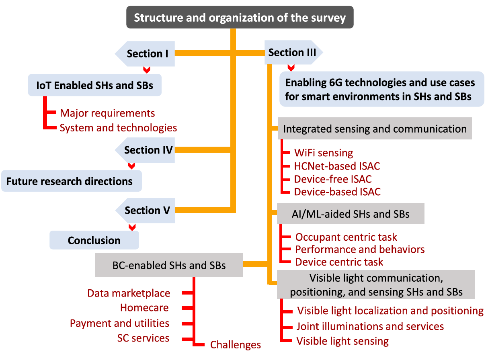
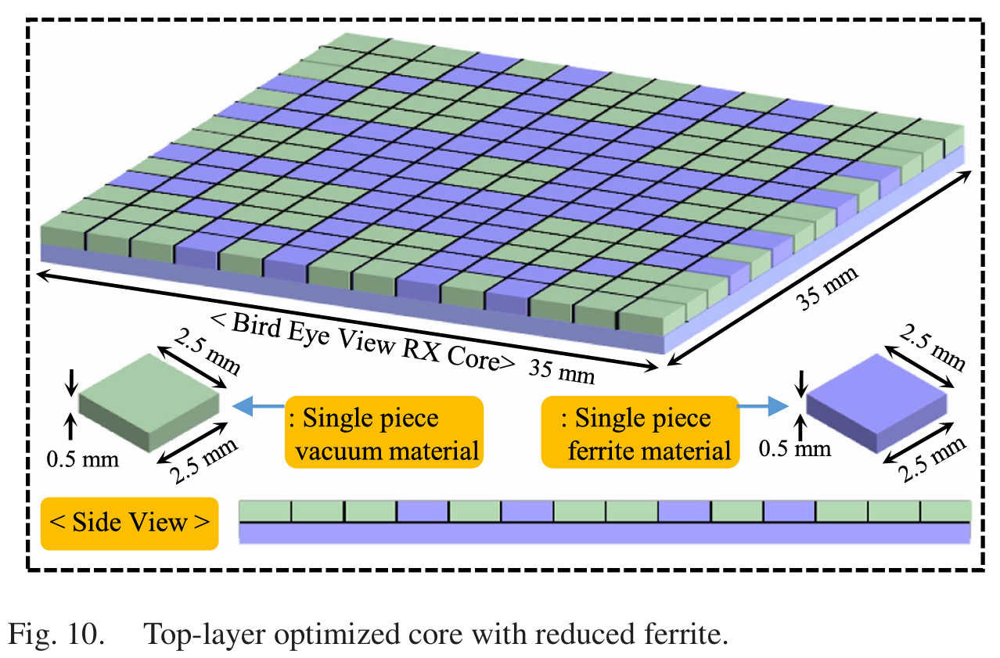
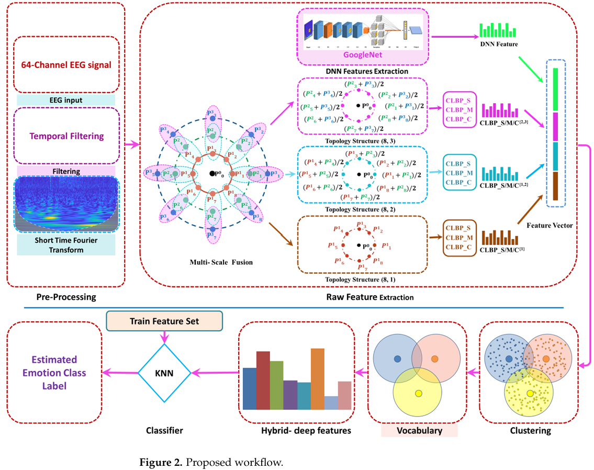

About Me
I am a PostDoc Researcher at the EnergyAI Laboratory, Korea Institute of Energy Technology (KENTECH), South Korea. My research sits at the intersection of Artificial Intelligence, Computer Vision, and Energy Systems.
I specialise in Computer Vision, Deep Learning, Wireless Power Transfer (WPT), and UAV/Drone Navigation. Currently developing AI-optimised Digital Twins for anomaly detection in DC power grids. Previously, I completed a Postdoctoral Fellowship at GIST University, developing AI-optimised WPT systems for implantable medical devices.
I received my Ph.D. in Telecommunication Engineering from the University of Engineering and Technology (UET), Taxila, Pakistan, as a Global Korea Scholarship (GKS) recipient.
Positions Available! I am looking for motivated Ph.D. and M.S. students to join the EnergyAI Lab. Candidates with a background in AI, Computer Vision, or Power Systems are encouraged to reach out. Please email your CV to fawadmsee20@gmail.com.
🔥 News
- Nov 2025 Joined EnergyAI Laboratory, KENTECH as a Postdoctoral Fellow.
- 2025 Paper published in Internet of Things on 6G-assisted smart homes and buildings.
- 2025 Paper accepted in IEEE Transactions on Power Electronics on ML-driven WPT coil/core optimisation.
- Oct 2025 Completed Postdoctoral Fellowship at GIST University on AI-optimised WPT for implantable medical devices.
- 2020 🏆 Winner (1st Prize) – Gwangju/Jeonnam Startup Idea Contest.
📝 Selected Publications
Selected publications — full list on Publications page and Google Scholar.



🎖 Honors & Awards
- 2020 Winner (1st Prize) – Gwangju/Jeonnam Startup Idea Contest
- GKS Global Korea Scholarship (GKS) Scholar – Full Ph.D. scholarship, Korea
- MS Full Scholarship – M.S. fellowship at UET Taxila, Pakistan
🧰 Service
- Reviewer – IEEE Transactions on Power Electronics, Sensors (MDPI), Applied Sciences
- Graduate Research Mentor – GIST University & KENTECH (2023–Present)
- Teaching Assistant – GIST University (2020–2022)